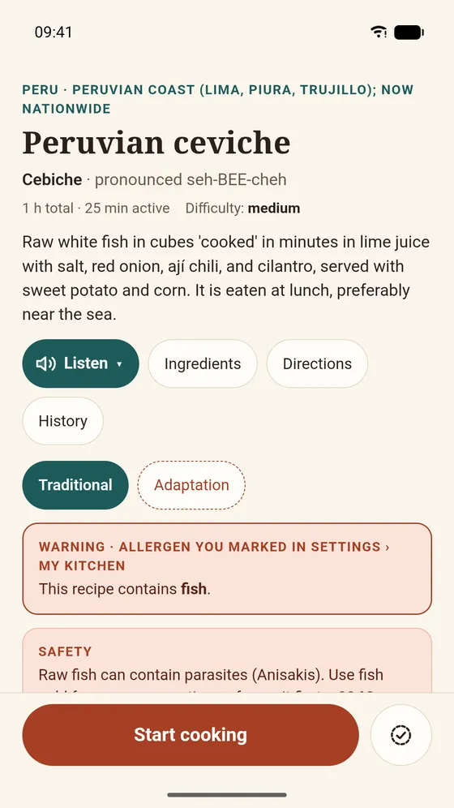
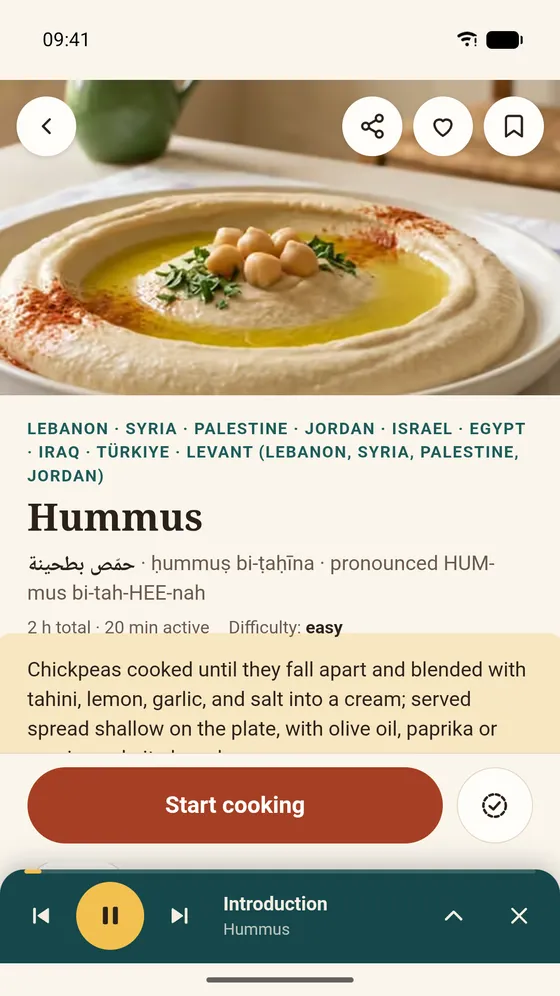

Home
A dish from the world to start with.
The home screen shows the dish of the day, with a photo and where it comes from. Search by name or description, or browse the featured recipes.

World Recipes
Traditional recipes from around the world, each with a photo, ingredients, step-by-step directions, allergens and the story of the dish. All on your phone, offline and with no account.
Free to download · the Complete plan, monthly or yearly, or “Forever” as a one-time purchase

Made for people who love to cook and like to get to know a dish before they start.
Home
The home screen shows the dish of the day, with a photo and where it comes from. Search by name or description, or browse the featured recipes.
The recipe
Each recipe has a photo, ingredients, directions, allergens and the story of the dish. Adjust the servings and choose metric or US measures.
Cooking mode
In cooking mode the screen shows one step at a time in large type, and the timers stay in view while you cook.

Read aloud
Your device’s own voice reads the recipe aloud, so your hands stay free.

Preview
Some recipes open in full for free. The others show a preview: photo, story and allergens.

I have at home
Tell SaborMundi what is in your kitchen and it shows the recipes you can make and what is missing. Filter by diet: vegetarian, vegan, gluten-free, dairy-free.

Shopping list
Gather the ingredients of the recipes you chose into a shopping list sorted by section, and add anything else you need.

My kitchen
Mark the allergens of the people you live with. Any recipe that contains one shows a warning at the top and highlights the ingredient.

Downloading is free, and some recipes open in full so you can try the app. The Complete plan, monthly or yearly, or the one-time “Forever” purchase opens every recipe.
The app’s screens.


No account, no ads and no data collection. SaborMundi makes no connections of its own to the internet: what you mark stays on your device and only leaves when you share a recipe or the list, or export the backup.
Downloading is free, and some recipes open in full at no cost. The others show a preview with the photo, story and allergens. The Complete plan, monthly or yearly, or the one-time “Forever” purchase opens them all. There are no ads.
Yes. Recipes, search, cooking mode and the shopping list all work with your phone offline. Only the purchase goes through the store.
No. There is no sign-up. To move your data to a new phone, export the backup.
Yes. Choose metric or US measures and adjust the servings of each recipe.
The recipes list the main allergens and safety notes, but brands and ingredients vary. Always check the label of each product and follow the advice of your doctor or dietitian.